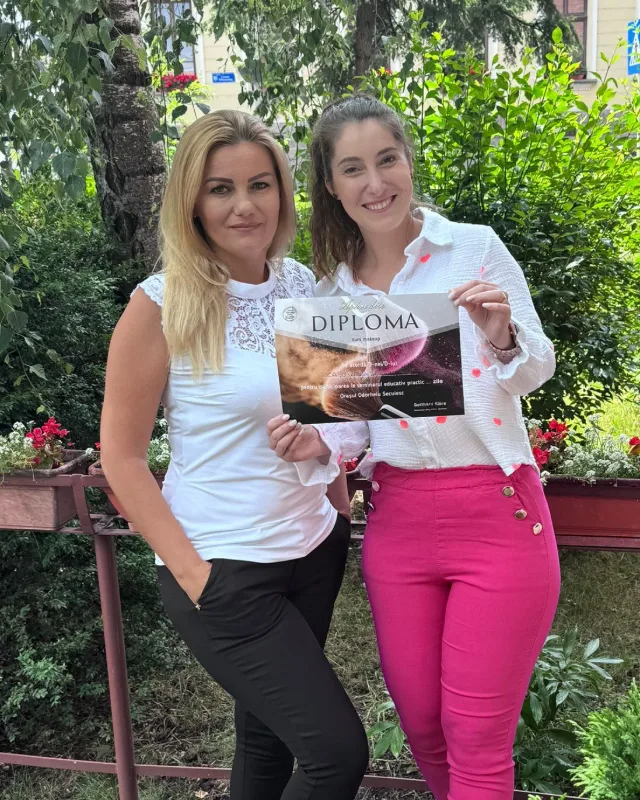

Fodrászképzés
Az Aphrodite nem csak dolgozik a szakmában — tanítja is. Egynapos tanfolyamtól egyéves képzésig, Ciubotaru Katalinnal.

Ciubotaru Katalin
„Fodrászként és oktatóként is fontosnak tartom a tudás átadását, a folyamatos fejlődést és azt, hogy a szakma szeretete másokhoz is eljusson.”
Húsz éve fodrász. Az Aphrodite Szépségszalonban kezdte a pályáját, azóta is itt dolgozik, és folyamatosan képzi magát — képzéseken vesz részt, új technikákat tanul.
Mit tanulsz meg
A tanulás a szalonban, valós munkák mellett zajlik — próbababán kezdve, vendégen folytatva.
Az alapok
Hajvágás, hajfestés és szárítás — a mindennapi szalonmunka, amire minden más épül.
Alkalmi frizurák
Kontyok, fonások, hullámok: menyasszonyi és alkalmi frizurák elkészítése.
Összetett technikák
Betekintés a balayage és a melír világába, lágy átmenetekkel.
A tandíj euróban értendő, a szalon árlistája szerint. A részletekről és a kezdésről Katalin személyesen tájékoztat.
Ma már itt dolgoznak
A csapat két fiatal fodrásza egy évig tanult Katalin mellett — ma a saját vendégeiket fogadják a szalonban.

„Úgy érzem, megtaláltam azt az utat, ami igazán nekem való.”Sebestyén Zsuzsa
2024 őszén iratkozott be, és egy évig tanult Katalin mellett: hajfestés, hajvágás, alkalmi frizurák, betekintés a balayage és a melír világába.

„Szeretem látni azt, amikor egy elkészült frizura magabiztosságot és örömet ad a vendégnek.”Kele Gabriella
2025-ben kezdte a szakmát, egy évet töltött a szalonban Katalin mellett. Ma hajvágással, festéssel, melírrel és balayage technikával foglalkozik.
Próbababán kezdődik


Sminkkurzus
Gotthárd Klára egynapos sminkkurzust és egyéni sminkoktatást tart — hogy a fontos alkalmakra tanult technikák otthon is könnyen menjenek. Kurzusairól személyesen ad tájékoztatást.
